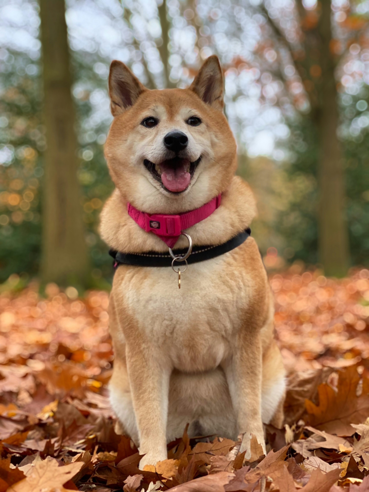

This is a Shiba Inu!

 Shiba Inus are found mostly in Japan
Shiba Inus are found mostly in Japan
"Shiba" means "brushwood" in Japanese, referring either to the terrain or the color of the dog's coat. "Inu" means "dog."
Shibas groom themselves like cats and generally avoid getting dirty, making them relatively clean and low-odor pets.